- កំណត់និយមន័យនៃអេលីប
- កំណត់សមីការស្តង់ដានៃអេលីប
- បំប្លែងសមីការទូទៅនៃអេលីបទៅជាសមីការស្តង់ដា
- កំណត់អ៊ុចសង់ទ្រីស៊ីតេនៃអេលីប
- បកស្រាយលក្ខណៈចាំងផ្លាតនៃអេលីប ។
1. សេចក្តីផ្តើម
គេយកប្លង់មួយ កាត់កោនបរិវត្តន៍ ដែលមិនកែងនឹងអ័ក្សកោន នោះផ្នែកប្រសព្វដែលបានជារូបធរណីមាត្រមួយ ដែលហៅថា អេលីប ។ ដូច្នេះ អេលីប គឺជា កោនិកមួយ ។
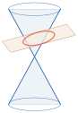
2. និយមន័យនៃអេលីប
(សៀវភៅពុម្ពទំព័រ 184 សរសេរខុសជា «2. និយមន័យនៃប៉ារ៉ាបូល»)
ឧទាហរណ៍ : គេមានក្រដាសមួយផ្ទាំង និងខ្សែមួយកំណាត់ ។ គេដោតម្ជុលពីរនៅលើក្រដាសត្រង់ចំណុចពីរផ្សេងគ្នាគឺ \(\displaystyle F_{1}\) និង \(\displaystyle F_{2}\) ហើយចងភ្ជាប់ចុងខ្សែទាំងសងខាងទៅនឹងម្ជុលទាំងពីរនោះ ។ បន្ទាប់មកទាញខ្សែនោះឱ្យតឹង ដោយខ្មៅដៃនៅត្រង់ចំណុច \(\displaystyle P\) (ដូចរូប) ។ គេរំកិលចុងខ្មៅដៃលើក្រដាស ដោយរក្សាខ្សែឱ្យតឹងជានិច្ច ។ ផលបូកចម្ងាយ \(\displaystyle PF_{1}\) និង \(\displaystyle PF_{2}\) ស្មើនឹងប្រវែងខ្សែ ។ ដូច្នេះ ផលបូកនេះជាចំនួនថេរ ហើយគន្លងដែលបានគូសដោយខ្មៅដៃនេះជាអេលីប ។ បើចំណុច \(\displaystyle F_{1}\) និង \(\displaystyle F_{2}\) ត្រួតស៊ីគ្នា នោះអេលីបនេះក្លាយជារង្វង់ ។
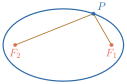
និយមន័យ អេលីបគឺជាសំណុំនៃចំណុចនៅក្នុងប្លង់ ដែលផលបូកចម្ងាយពីចំណុចនោះទៅចំណុចនឹងពីរជាចំនួនថេរ ។ ចំណុចនឹងទាំងពីរហៅថា កំណុំ ។
គេតាង
- កំណុំទាំងពីរដោយអក្សរ \(\displaystyle F_{1}\) និង \(\displaystyle F_{2}\)
- \(\displaystyle V_{1}\) និង \(\displaystyle V_{2}\) ជាចំណុចប្រសព្វរវាងបន្ទាត់ \(\displaystyle F_{1}F_{2}\) និងអេលីប ហៅថា កំពូល
- \(\displaystyle I\) ជាចំណុចកណ្តាលនៃអង្កត់ \(\displaystyle F_{1}F_{2}\) (ឬអង្កត់ \(\displaystyle V_{1}V_{2}\)) ហៅថា ផ្ចិត
- \(\displaystyle B_{1}\) និង \(\displaystyle B_{2}\) ជាចំណុចប្រសព្វរវាង មេដ្យាទ័រនៃអង្កត់ \(\displaystyle F_{1}F_{2}\) និងអេលីប
- \(\displaystyle V_{1}V_{2} = 2a\), \(\displaystyle (a > 0)\) ហៅថា “អ័ក្សធំ” នៃអេលីប
- \(\displaystyle B_{1}B_{2} = 2b\), \(\displaystyle (b > 0)\) ហៅថា “អ័ក្សតូច” នៃអេលីប
- \(\displaystyle F_{1}F_{2} = 2c\), \(\displaystyle (c > 0)\)
- អ័ក្សធំ និងអ័ក្សតូចជាអ័ក្សឆ្លុះនៃអេលីប
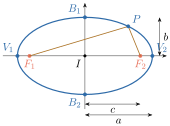
- \(\displaystyle IV_{1} = IV_{2} = a\) ហៅថា កន្លះអ័ក្សធំ
- \(\displaystyle IB_{1} = IB_{2} = b\) ហៅថា កន្លះអ័ក្សតូច
- \(\displaystyle IF_{1} = IF_{2} = c\)
- \(\displaystyle a > b > 0\) និង \(\displaystyle a > c > 0\)
វិបាក 1 គ្រប់ចំណុច \(\displaystyle P\) ស្ថិតនៅលើអេលីបដែលមានកំណុំ \(\displaystyle F_{1}\) និង \(\displaystyle F_{2}\) នោះ \(\displaystyle PF_{1} + PF_{2} = V_{1}V_{2} = 2a, (a > 0)\) ព្រោះ ដោយចំណុច \(\displaystyle P, V_{1}\) ស្ថិតនៅលើអេលីប \(\displaystyle F_{1}, F_{2}\) នោះ \(\displaystyle PF_{1} + PF_{2} = V_{1}F_{1} + V_{1}F_{2} = V_{1}F_{1} + F_{1}F_{2} + V_{1}F_{1}\) (1) ហើយចំណុច \(\displaystyle V_{1}, V_{2}\) ស្ថិតនៅលើអេលីប \(\displaystyle F_{1}, F_{2}\) នោះ
តាម \(\displaystyle (1)\): \(\displaystyle PF_{1} + PF_{2} = V_{1}F_{1} + F_{1}F_{2} + V_{1}F_{1} = V_{1}F_{1} + F_{1}F_{2} + V_{2}F_{2} = V_{1}V_{2} = 2a\) ដូច្នេះ គ្រប់ចំណុច \(\displaystyle P\) ស្ថិតនៅលើអេលីបដែលមានកំណុំ \(\displaystyle F_{1}\) និង \(\displaystyle F_{2}\) គេបាន \(\displaystyle PF_{1} + PF_{2} = V_{1}V_{2} = 2a, (a > 0)\) ។
វិបាក 2 \(\displaystyle a^{2} = c^{2} + b^{2}\) ឬ \(\displaystyle c^{2} = a^{2} - b^{2}\) ព្រោះ តាមទ្រឹស្តីបទពីតាគ័រក្នុងត្រីកោណកែង \(\displaystyle IB_{1}F_{1}\) គេបាន \(\displaystyle B_{1}F_{1}^{2} = IB_{1}^{2} + IF_{1}^{2}\) (2) ដោយ \(\displaystyle IB_{1} = b\), \(\displaystyle IF_{1} = c\) ហើយ \(\displaystyle B_{1}\) ស្ថិតនៅលើអេលីបមានកំណុំ \(\displaystyle F_{1}\) និង \(\displaystyle F_{2}\) នោះ
តាម \(\displaystyle (2)\): \(\displaystyle a^{2} = b^{2} + c^{2}\) ។
3. សមីការនៃអេលីប
3.1. សមីការស្តង់ដានៃអេលីបដែលមានផ្ចិតត្រង់គល់អ័ក្សកូអរដោនេ
គេអាចប្រើនិយមន័យ ក្នុងការរកសមីការស្តង់ដានៃអេលីបមួយដែលមានផ្ចិតនៅត្រង់គល់អ័ក្សកូអរដោនេ \(\displaystyle (0, 0)\) ។ ដោយហេតុថាអេលីបអាស្រ័យនឹងចំណុចកំណុំទាំងពីរ ដូច្នេះ គេត្រូវកំណត់កូអរដោនេរបស់កំណុំទាំងពីរជាមុនសិន ។ យកកំណុំទាំងពីរ \(\displaystyle F_{1}\) និង \(\displaystyle F_{2}\) ស្ថិតនៅចម្ងាយ \(\displaystyle c\) ឯកតាពីផ្ចិត \(\displaystyle I(0, 0)\) ។
3.1.1. ករណីអេលីបមានអ័ក្សធំស្ថិតនៅលើអ័ក្សអាប់ស៊ីស
គេបានកូអរដោនេកំណុំទាំងពីរគឺ \(\displaystyle F_{1}(c, 0)\) និង \(\displaystyle F_{2}(-c, 0)\) តាង \(\displaystyle P(x, y)\) ជាចំណុចស្ថិតនៅលើអេលីប ហើយយកកំពូលទាំងពីរ \(\displaystyle V_{1}\) និង \(\displaystyle V_{2}\) ស្ថិតនៅចម្ងាយ \(\displaystyle a\) ឯកតាពីផ្ចិត \(\displaystyle (0, 0)\)
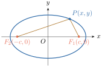
តាមនិយមន័យនៃអេលីប គេបាន \(\displaystyle PF_{1} + PF_{2} = V_{1}V_{2} = 2a, (a > 0)\)
ចែកអង្គទាំងពីរនឹង \(\displaystyle a^{2}b^{2}\) គេបាន \(\displaystyle \frac{x^{2}}{a^{2}} + \frac{y^{2}}{b^{2}} = 1\) នេះជាសមីការស្តង់ដានៃអេលីបដែលមានផ្ចិតត្រង់គល់អ័ក្សកូអរដោនេ និងមានអ័ក្សធំស្ថិតនៅលើអ័ក្សអាប់ស៊ីស ។
3.1.2. ករណីអេលីបមានអ័ក្សធំស្ថិតនៅលើអ័ក្សអរដោនេ
គេបានកូអរដោនេកំណុំទាំងពីរគឺ \(\displaystyle F_{1}(0, c)\) និង \(\displaystyle F_{2}(0, -c)\) តាង \(\displaystyle P(x, y)\) ជាចំណុចស្ថិតនៅលើអេលីប ធ្វើដូចគ្នាដែរ គេបានសមីការស្តង់ដានៃអេលីបគឺ \(\displaystyle \frac{x^{2}}{b^{2}} + \frac{y^{2}}{a^{2}} = 1\) នេះជាសមីការមានផ្ចិតត្រង់គល់អ័ក្សកូអរដោនេ និងមានអ័ក្សធំស្ថិតនៅលើអ័ក្សអរដោនេ ។
អេលីបដែលមានផ្ចិតត្រង់គល់អ័ក្សកូអរដោនេ និងមានអ័ក្សធំស្ថិតនៅលើអ័ក្សអាប់ស៊ីសមានសមីការស្តង់ដា \(\displaystyle \frac{x^{2}}{a^{2}} + \frac{y^{2}}{b^{2}} = 1, \quad a > b > 0\)
- អ័ក្សធំមានប្រវែង \(\displaystyle 2a\) និងអ័ក្សតូចមានប្រវែង \(\displaystyle 2b\)
- កំពូលទាំងពីរមានកូអរដោនេ \(\displaystyle (a, 0)\) និង \(\displaystyle (-a, 0)\)
- កំណុំទាំងពីរមានកូអរដោនេ \(\displaystyle (c, 0)\) និង \(\displaystyle (-c, 0)\) ដែល \(\displaystyle c^{2} = a^{2} - b^{2}\) ។
អេលីបដែលមានផ្ចិតត្រង់គល់អ័ក្សកូអរដោនេ និងមានអ័ក្សធំស្ថិតនៅលើអ័ក្សអរដោនេមានសមីការស្តង់ដា \(\displaystyle \frac{x^{2}}{b^{2}} + \frac{y^{2}}{a^{2}} = 1, \quad a > b > 0\)
- អ័ក្សធំមានប្រវែង \(\displaystyle 2a\) និងអ័ក្សតូចមានប្រវែង \(\displaystyle 2b\)
- កំពូលទាំងពីរមានកូអរដោនេ \(\displaystyle (0, a)\) និង \(\displaystyle (0, -a)\)
- កំណុំទាំងពីរមានកូអរដោនេ \(\displaystyle (0, c)\) និង \(\displaystyle (0, -c)\) ដែល \(\displaystyle c^{2} = a^{2} - b^{2}\) ។
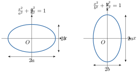
វិធីសង់ក្រាបតាងអេលីប :
- ដៅផ្ចិត កំពូល និងកំណុំ
- គូសប្រវែងអ័ក្សធំ \(\displaystyle 2a\) និងអ័ក្សតូច \(\displaystyle 2b\)
ចំណុចកាត់ :
- របៀបទី 1
បើកំណុំ \(\displaystyle F(\pm c, 0)\) នោះយកចំណុចកាត់ \(\displaystyle \begin{cases} x = \pm c \\ y = \pm \frac{b^{2}}{a} \end{cases}\)
បើកំណុំ \(\displaystyle F(0, \pm c)\) នោះយកចំណុចកាត់ \(\displaystyle \begin{cases} y = \pm c \\ x = \pm \frac{b^{2}}{a} \end{cases}\) - របៀបទី 2
ជំហានទី 1 : ត្រង់កំណុំ គូសអង្កត់មានប្រវែងស្មើ \(\displaystyle \frac{2b^{2}}{a}\) (អង្កត់ទាំងពីរនេះមានអ័ក្សធំជាមេដ្យាទ័រ)
ជំហានទី 2 : គេបានចំណុចចុងនៃអង្កត់ទាំងពីរជាចំណុចកាត់របស់អេលីប ។
- របៀបទី 1
គេឱ្យសមីការ \(\displaystyle 4x^{2} + 25y^{2} = 100\) ។
- ក. បង្ហាញថាសមីការនេះជាសមីការនៃអេលីប ។ រួចរកប្រវែងអ័ក្សធំ អ័ក្សតូច កូអរដោនេកំពូលទាំងពីរ និងកូអរដោនេកំណុំទាំងពីរនៃអេលីបនេះ ។
- ខ. សង់ក្រាបតាងអេលីបនេះ ។
- ក. គេចែកអង្គទាំងពីរនៃសមីការនឹង \(\displaystyle 100\) គេបាន \(\displaystyle \frac{4x^{2}}{100} + \frac{25y^{2}}{100} = 1\) ឬ \(\displaystyle \frac{x^{2}}{25} + \frac{y^{2}}{4} = 1\) ។
ដូច្នេះ សមីការនេះជាសមីការនៃអេលីបមួយដែលមានផ្ចិត \(\displaystyle (0, 0)\) និងអ័ក្សធំស្ថិតនៅលើអ័ក្សអាប់ស៊ីស ។
តាមសមីការនេះ គេទាញបាន \(\displaystyle a = 5\) និង \(\displaystyle b = 2\)
ហើយ \(\displaystyle c^{2} = a^{2} - b^{2} = 25 - 4 = 21\) នោះ \(\displaystyle c = \sqrt{21}\)
អ័ក្សធំមានប្រវែង \(\displaystyle 2a = 2 \times 5 = 10\) និងអ័ក្សតូចមានប្រវែង \(\displaystyle 2b = 2 \times 2 = 4\)
កំពូលទាំងពីរមានកូអរដោនេ \(\displaystyle (5, 0)\) និង \(\displaystyle (-5, 0)\) ។
កំណុំទាំងពីរមានកូអរដោនេ \(\displaystyle (\sqrt{21}, 0)\) និង \(\displaystyle (-\sqrt{21}, 0)\) ។ - ខ.
សង់ក្រាបតាងសមីការអេលីប
- ផ្ចិត \(\displaystyle I(0, 0)\)
- កំពូល \(\displaystyle V_{1}(5, 0)\), \(\displaystyle V_{2}(-5, 0)\)
- កំណុំ \(\displaystyle F_{1}(\sqrt{21}, 0)\), \(\displaystyle F_{2}(-\sqrt{21}, 0)\)
- គូសប្រវែងអ័ក្សធំ \(\displaystyle 2a = 2 \cdot 5 = 10\)
- គូសប្រវែងអ័ក្សតូច \(\displaystyle 2b = 2 \cdot 2 = 4\)
- ចំណុចកាត់ : ត្រង់កំណុំ គូសអង្កត់មានប្រវែង \(\displaystyle \frac{2b^{2}}{a} = \frac{2 \times 4}{5} = \frac{8}{5} = 1.6\) (អង្កត់ទាំងពីរនេះ មានអ័ក្សធំជាមេដ្យាទ័រ)
គេបានចំណុចចុងនៃអង្កត់ទាំងពីរជាចំណុចកាត់របស់អេលីប ។
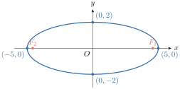
រកសមីការស្តង់ដានៃអេលីប ដែលមានកំណុំមួយនៅត្រង់ចំណុច \(\displaystyle (0, 2)\) និងកំពូលទាំងពីរនៅត្រង់ចំណុច \(\displaystyle (0, -3)\) និង \(\displaystyle (0, 3)\) រួចសង់ក្រាបតាងអេលីបនេះ ។
- កំណត់សមីការស្តង់ដានៃអេលីប
គេមាន កំពូល \(\displaystyle (0, -3), (0, 3)\) និងកំណុំ \(\displaystyle (0, 2)\)
តាមកូអរដោនេកំពូល នោះអេលីបមានផ្ចិត \(\displaystyle I\left(\frac{0+0}{2}, \frac{-3+3}{2}\right) = I(0, 0)\) និងមានអ័ក្សធំស្ថិតនៅលើអ័ក្សអរដោនេ
គេបាន សមីការអេលីបមានទម្រង់ \(\displaystyle \frac{x^{2}}{b^{2}} + \frac{y^{2}}{a^{2}} = 1\), \(\displaystyle (a > b > 0)\)
ដោយ អេលីបមានកំពូល \(\displaystyle (0, -3), (0, 3)\) និងកំណុំ \(\displaystyle (0, 2)\) នោះ
\(\displaystyle a = 3\), \(\displaystyle c = 2\) នាំឱ្យ \(\displaystyle a^{2} = 9\), \(\displaystyle c^{2} = 4\) និង \(\displaystyle b^{2} = a^{2} - c^{2} = 9 - 4 = 5\)
\(\displaystyle \implies\) សមីការ \(\displaystyle \frac{x^{2}}{5} + \frac{y^{2}}{9} = 1\)
ដូច្នេះ សមីការអេលីប \(\displaystyle \frac{x^{2}}{5} + \frac{y^{2}}{9} = 1\) ។ - សង់ក្រាបតាងសមីការអេលីប
ផ្ចិត \(\displaystyle I(0, 0)\)
កំពូល \(\displaystyle V_{1}(0, -3)\), \(\displaystyle V_{2}(0, 3)\)
កំណុំ \(\displaystyle F_{1}(0, -2)\), \(\displaystyle F_{2}(0, 2)\)
គូសប្រវែងអ័ក្សធំ \(\displaystyle 2a = 2 \cdot 3 = 6\)
គូសប្រវែងអ័ក្សតូច \(\displaystyle 2b = 2 \cdot \sqrt{5} = 2\sqrt{5}\) ។
ចំណុចកាត់ : យកចំណុចកាត់ \(\displaystyle \begin{cases} y = \pm c = \pm 2 \\ x = \pm \frac{b^{2}}{a} = \pm \frac{5}{3} \end{cases}\)
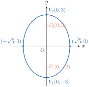
រកប្រវែងអ័ក្សធំ អ័ក្សតូច កូអរដោនេផ្ចិត កំណុំ និងកំពូលនៃអេលីប រួចសង់ក្រាបតាងអេលីប ដូចខាងក្រោម៖
- ក. \(\displaystyle \frac{x^{2}}{25} + \frac{y^{2}}{16} = 1\)
- ខ. \(\displaystyle 25x^{2} + 16y^{2} = 400\) ។
មើលចម្លើយ
- ក. ប្រវែងអ័ក្សធំ \(\displaystyle 2a = 10\) ប្រវែងអ័ក្សតូច \(\displaystyle 2b = 8\) ផ្ចិត \(\displaystyle I(0, 0)\) កំណុំ \(\displaystyle F_{1}(3, 0)\), \(\displaystyle F_{2}(-3, 0)\) និងកំពូល \(\displaystyle V_{1}(5, 0)\), \(\displaystyle V_{2}(-5, 0)\) ។
- ខ. ប្រវែងអ័ក្សធំ \(\displaystyle 2a = 10\) ប្រវែងអ័ក្សតូច \(\displaystyle 2b = 8\) ផ្ចិត \(\displaystyle I(0, 0)\) កំណុំ \(\displaystyle F_{1}(0, 3)\), \(\displaystyle F_{2}(0, -3)\) និងកំពូល \(\displaystyle V_{1}(0, 5)\), \(\displaystyle V_{2}(0, -5)\) ។
រកសមីការស្តង់ដានៃអេលីប តាមករណីនីមួយៗខាងក្រោម៖
- ក. អ័ក្សធំមានប្រវែង \(\displaystyle 10\) ឯកតា កំណុំទាំងពីរមានកូអរដោនេ \(\displaystyle (4, 0)\) និង \(\displaystyle (-4, 0)\)
- ខ. អ័ក្សធំមានប្រវែង \(\displaystyle 10\) ឯកតា កំណុំទាំងពីរមានកូអរដោនេ \(\displaystyle (0, 4)\) និង \(\displaystyle (0, -4)\) ។
មើលចម្លើយ
- ក. \(\displaystyle \frac{x^{2}}{25} + \frac{y^{2}}{9} = 1\)
- ខ. \(\displaystyle \frac{x^{2}}{25} + \frac{y^{2}}{41} = 1\) (សៀវភៅពុម្ពទំព័រ 190 ឱ្យចម្លើយ \(\displaystyle \frac{x^{2}}{9} + \frac{y^{2}}{25} = 1\) ដោយសារប្រធានសរសេរខុសពាក្យ «អ័ក្សតូច» ជំនួសឱ្យ «អ័ក្សធំ»)
3.2. សមីការស្តង់ដានៃអេលីបដែលមានផ្ចិតខុសពីគល់អ័ក្សកូអរដោនេ
គេប្រើនិយមន័យ ក្នុងសមីការស្តង់ដានៃអេលីបមួយដែលមានផ្ចិតខុសពីគល់អ័ក្សអរដោនេ \(\displaystyle (h, k)\) ។ ដោយហេតុថា អេលីបអាស្រ័យនឹងចំណុចកំណុំទាំងពីរ ដូច្នេះគេត្រូវកំណត់កូអរដោនេរបស់កំណុំទាំងពីរជាមុនសិន ។ យកកំណុំ \(\displaystyle F_{1}\) និង \(\displaystyle F_{2}\) ស្ថិតនៅចម្ងាយ \(\displaystyle c\) ឯកតាពីផ្ចិត \(\displaystyle I\) ហើយកំពូល \(\displaystyle V_{1}\) និង \(\displaystyle V_{2}\) ស្ថិតនៅចម្ងាយ \(\displaystyle a\) ឯកតាពីផ្ចិត \(\displaystyle I\) ។
3.2.1. ករណីអេលីបមានអ័ក្សធំស្របនឹងអ័ក្សអាប់ស៊ីស
គេបាន កូអរដោនេកំណុំទាំងពីរគឺ \(\displaystyle F_{1}(h + c, k)\) និង \(\displaystyle F_{2}(h - c, k)\) តាង \(\displaystyle P(x, y)\) ជាចំណុចស្ថិតនៅលើអេលីប តាមនិយមន័យនៃអេលីប គេបាន \(\displaystyle PF_{1} + PF_{2} = 2a, \quad (a > 0)\)
ចែកអង្គទាំងពីរនឹង \(\displaystyle a^{2}b^{2}\) គេបាន \(\displaystyle \frac{(x - h)^{2}}{a^{2}} + \frac{(y - k)^{2}}{b^{2}} = 1\) នេះជាសមីការស្តង់ដានៃអេលីបដែលមានផ្ចិតខុសពីគល់អ័ក្សកូអរដោនេ និងមានអ័ក្សធំស្របនឹងអ័ក្សអាប់ស៊ីស ។
3.2.2. ករណីអេលីបមានអ័ក្សធំស្របនឹងអ័ក្សអរដោនេ
គេបាន កូអរដោនេកំណុំទាំងពីរគឺ \(\displaystyle F_{1}(h, k + c)\) និង \(\displaystyle F_{2}(h, k - c)\) តាង \(\displaystyle P(x, y)\) ជាចំណុចស្ថិតនៅលើអេលីប ធ្វើដូចគ្នាដែរ គេបានសមីការស្តង់ដានៃអេលីបគឺ \(\displaystyle \frac{(x - h)^{2}}{b^{2}} + \frac{(y - k)^{2}}{a^{2}} = 1\) នេះជាសមីការមានផ្ចិតខុសពីគល់អ័ក្សកូអរដោនេ និងមានអ័ក្សធំស្របនឹងអ័ក្សអរដោនេ ។
អេលីបដែលមានផ្ចិត \(\displaystyle (h, k)\) និងអ័ក្សធំស្របនឹងអ័ក្សអាប់ស៊ីស មានសមីការស្តង់ដា \(\displaystyle \frac{(x - h)^{2}}{a^{2}} + \frac{(y - k)^{2}}{b^{2}} = 1, \quad (a > b > 0)\)
- អ័ក្សធំមានប្រវែង \(\displaystyle 2a\) និងអ័ក្សតូចមានប្រវែង \(\displaystyle 2b\)
- កំពូលទាំងពីរមានកូអរដោនេ \(\displaystyle (h - a, k)\) និង \(\displaystyle (h + a, k)\)
- កំណុំទាំងពីរមានកូអរដោនេ \(\displaystyle (h - c, k)\) និង \(\displaystyle (h + c, k)\) ដែល \(\displaystyle c^{2} = a^{2} - b^{2}\) ។
អេលីបដែលមានផ្ចិត \(\displaystyle (h, k)\) និងអ័ក្សធំស្របនឹងអ័ក្សអរដោនេ មានសមីការស្តង់ដា \(\displaystyle \frac{(x - h)^{2}}{b^{2}} + \frac{(y - k)^{2}}{a^{2}} = 1, \quad (a > b > 0)\)
- អ័ក្សធំមានប្រវែង \(\displaystyle 2a\) និងអ័ក្សតូចមានប្រវែង \(\displaystyle 2b\)
- កំពូលទាំងពីរមានកូអរដោនេ \(\displaystyle (h, k - a)\) និង \(\displaystyle (h, k + a)\)
- កំណុំទាំងពីរមានកូអរដោនេ \(\displaystyle (h, k - c)\) និង \(\displaystyle (h, k + c)\) ដែល \(\displaystyle c^{2} = a^{2} - b^{2}\) ។
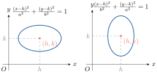
រកកូអរដោនេផ្ចិត កំពូល កំណុំនៃអេលីប \(\displaystyle 16(x - 1)^{2} + 25(y + 2)^{2} = 400\) រួចសង់ក្រាបតាងសមីការអេលីប ។
- កំណត់កូអរដោនេផ្ចិត កំពូល កំណុំនៃអេលីប
គេមាន សមីការ \(\displaystyle 16(x - 1)^{2} + 25(y + 2)^{2} = 400 \implies \frac{(x - 1)^{2}}{5^{2}} + \frac{(y + 2)^{2}}{4^{2}} = 1\) ជាសមីការស្តង់ដានៃអេលីបដែលមានអ័ក្សធំស្របនឹងអ័ក្សអាប់ស៊ីស ហើយសមីការនេះមានរាង \(\displaystyle \frac{(x - h)^{2}}{a^{2}} + \frac{(y - k)^{2}}{b^{2}} = 1\) គេបាន
\(\displaystyle h = 1\), \(\displaystyle k = -2\), \(\displaystyle a = 5\), \(\displaystyle b = 4\)
\(\displaystyle c^{2} = a^{2} - b^{2} = 5^{2} - 4^{2} = 9 \implies c = 3\)
ផ្ចិត \(\displaystyle I(h, k) = I(1, -2)\)
កំពូល \(\displaystyle V(h \pm a, k) = V(1 \pm 5, -2) = \begin{cases} V_{1}(6, -2) \\ V_{2}(-4, -2) \end{cases}\)
កំណុំ \(\displaystyle F(h \pm c, k) = F(1 \pm 3, -2) = \begin{cases} F_{1}(4, -2) \\ F_{2}(-2, -2) \end{cases}\)
ដូច្នេះ អេលីបមានផ្ចិត \(\displaystyle I(1, -2)\) កំពូល \(\displaystyle V_{1}(6, -2)\), \(\displaystyle V_{2}(-4, -2)\) និងកំណុំ \(\displaystyle F_{1}(4, -2)\), \(\displaystyle F_{2}(-2, -2)\) ។ សង់ក្រាបតាងអេលីប \(\displaystyle 16(x - 1)^{2} + 25(y + 2)^{2} = 400\)
ផ្ចិត \(\displaystyle I(1, -2)\)
កំពូល \(\displaystyle V_{1}(6, -2)\), \(\displaystyle V_{2}(-4, -2)\)
កំណុំ \(\displaystyle F_{1}(4, -2)\), \(\displaystyle F_{2}(-2, -2)\)
ប្រវែងអ័ក្សធំ \(\displaystyle 2a = 10\) និងប្រវែងអ័ក្សតូច \(\displaystyle 2b = 8\) ។
ចំណុចកាត់ :- ត្រង់កំណុំគូសអង្កត់មានប្រវែង \(\displaystyle \frac{2b^{2}}{a} = \frac{2 \times 16}{5} = \frac{32}{5} = 6.4\) (អង្កត់ទាំងពីរមានអ័ក្សធំជាមេដ្យាទ័រ)
- គេបានចំណុចចុងនៃអង្កត់ទាំងពីរជាចំណុចកាត់របស់អេលីប ។
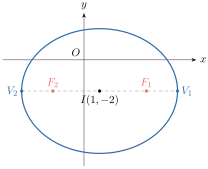
រកសមីការស្តង់ដានៃអេលីបដែលមានកំពូលទាំងពីរត្រង់ចំណុច \(\displaystyle (3, 1)\) និង \(\displaystyle (3, 9)\) ហើយអ័ក្សតូចមានប្រវែង \(\displaystyle 6\) ឯកតា ។
- កំណត់សមីការស្តង់ដានៃអេលីប
ដោយ កំពូលទាំងពីរមានអាប់ស៊ីសស្មើគ្នា និងអរដោនេប្រែប្រួល នោះសមីការស្តង់ដានៃអេលីបមានទម្រង់ \(\displaystyle \frac{(x - h)^{2}}{b^{2}} + \frac{(y - k)^{2}}{a^{2}} = 1\), \(\displaystyle (a > b > 0)\)
តែអេលីបមានកំពូល \(\displaystyle (3, 1)\) និង \(\displaystyle (3, 9)\)
នោះ \(\displaystyle \begin{cases} h = 3 \\ k - a = 1 \\ k + a = 9 \end{cases} \implies \begin{cases} h = 3 \\ k = 5 \\ a = 9 - k = 4 \implies a^{2} = 16 \end{cases}\)
ហើយអេលីបមានអ័ក្សតូចប្រវែង \(\displaystyle 6\) ឯកតា នោះ \(\displaystyle 2b = 6 \implies b = 3 \implies b^{2} = 9\)
គេបាន សមីការអេលីបគឺ \(\displaystyle \frac{(x - 3)^{2}}{9} + \frac{(y - 5)^{2}}{16} = 1\)
ដូច្នេះ សមីការស្តង់ដានៃអេលីបគឺ \(\displaystyle \frac{(x - 3)^{2}}{9} + \frac{(y - 5)^{2}}{16} = 1\) ។ - សង់ក្រាបតាងអេលីប
ផ្ចិត \(\displaystyle (h, k) = (3, 5)\)
កំពូល \(\displaystyle (3, 1)\) និង \(\displaystyle (3, 9)\)
កំណុំ \(\displaystyle F(h, k \pm c) = F(3, 5 \pm \sqrt{7})\)
ប្រវែងអ័ក្សធំ \(\displaystyle 2a = 8\) និងប្រវែងអ័ក្សតូច \(\displaystyle 2b = 6\)
ចំណុចកាត់ : ត្រង់កំណុំគូសអង្កត់មានប្រវែង \(\displaystyle \frac{2b^{2}}{a} = \frac{2 \times 9}{4} = \frac{9}{2} = 4.5\) (អង្កត់ទាំងពីរមានអ័ក្សធំជាមេដ្យាទ័រ)
គេបានចំណុចចុងនៃអង្កត់ទាំងពីរជាចំណុចកាត់របស់អេលីប ។
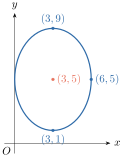
រកកូអរដោនេផ្ចិត កំពូល កំណុំ ហើយសង់ក្រាបនៃអេលីបខាងក្រោម៖
- ក. \(\displaystyle \frac{(x - 2)^{2}}{16} + \frac{(y + 3)^{2}}{49} = 1\)
- ខ. \(\displaystyle 4(x - 3)^{2} + 9(y + 3)^{2} = 36\) ។
មើលចម្លើយ
- ក. ផ្ចិត \(\displaystyle I(2, -3)\) កំពូល \(\displaystyle V_{1}(2, -10)\), \(\displaystyle V_{2}(2, 4)\) កំណុំ \(\displaystyle F_{1}(2, -3 + \sqrt{33})\), \(\displaystyle F_{2}(2, -3 - \sqrt{33})\) ។
- ខ. ផ្ចិត \(\displaystyle I(3, -3)\) កំពូល \(\displaystyle V_{1}(6, -3)\), \(\displaystyle V_{2}(0, -3)\) កំណុំ \(\displaystyle F_{1}(3 + \sqrt{5}, -3)\), \(\displaystyle F_{2}(3 - \sqrt{5}, -3)\) (សៀវភៅពុម្ពទំព័រ 193 ឱ្យចម្លើយ \(\displaystyle k = 2\) ដែលត្រូវនឹង \(\displaystyle (y - 2)^{2}\)) ។
រកសមីការស្តង់ដានៃអេលីបដែលមានផ្ចិត \(\displaystyle (1, -3)\) កំពូល \(\displaystyle (1, 2)\) និងកំណុំ \(\displaystyle (1, -7)\) ។
មើលចម្លើយ
\(\displaystyle \frac{(x - 1)^{2}}{9} + \frac{(y + 3)^{2}}{25} = 1\) ។
3.3. សមីការទូទៅនៃអេលីប
ឧទាហរណ៍ : អេលីបមួយមានសមីការស្តង់ដា \(\displaystyle \frac{(x - 2)^{2}}{9} + \frac{(y - 1)^{2}}{16} = 1\) ដោយភាគបែងរួមនៃសមីការនេះគឺ \(\displaystyle 144\) គេបាន \(\displaystyle 16(x - 2)^{2} + 9(y - 1)^{2} = 144\) \(\displaystyle 16(x^{2} - 4x + 4) + 9(y^{2} - 2y + 1) = 144\) ឬ \(\displaystyle 16x^{2} + 9y^{2} - 64x - 18y - 71 = 0\) សមីការដឺក្រេទី 2 នៃ \(\displaystyle x\) និង \(\displaystyle y\) ហៅថា សមីការទូទៅនៃអេលីប ។
អេលីបមួយមានសមីការទូទៅ \(\displaystyle Ax^{2} + By^{2} + Cx + Dy + E = 0\) ដែល \(\displaystyle A \cdot B > 0\) និង \(\displaystyle A \neq B\) ។
សមីការដឺក្រេទី 2 មានរាង \(\displaystyle Ax^{2} + By^{2} + Cx + Dy + E = 0\) ដែល \(\displaystyle A \cdot B > 0\) និង \(\displaystyle A \neq B\) ជាសមីការទូទៅនៃអេលីប ។ ជារង្វង់បើ \(\displaystyle A = B\) ។
\(\displaystyle 16x^{2} + 25y^{2} + 32x - 100y - 284 = 0\) ។
- ក. បំប្លែងសមីការនេះ ជាសមីការស្តង់ដា
- ខ. រកកូអរដោនេនៃផ្ចិត កំពូល កំណុំ និងសង់ក្រាបតាងអេលីបនោះ ។
- ក.
បំប្លែងសមីការ \(\displaystyle 16x^{2} + 25y^{2} + 32x - 100y - 284 = 0\) ជាសមីការស្តង់ដា
គេមាន\[\begin{aligned} 16x^{2} + 25y^{2} + 32x - 100y - 284 &= 0 \\ (16x^{2} + 32x) + (25y^{2} - 100y) - 284 &= 0 \\ 16(x^{2} + 2x) + 25(y^{2} - 4y) - 284 &= 0 \\ 16[(x + 1)^{2} - 1^{2}] + 25[(y - 2)^{2} - 2^{2}] - 284 &= 0 \\ 16(x + 1)^{2} + 25(y - 2)^{2} &= 400 \\ \frac{(x + 1)^{2}}{25} + \frac{(y - 2)^{2}}{16} &= 1 \end{aligned}\]ជាសមីការស្តង់ដានៃអេលីបដែលមានអ័ក្សធំជាអ័ក្សស្របនឹងអ័ក្សអាប់ស៊ីស ។
ដូច្នេះ សមីការស្តង់ដានៃអេលីប \(\displaystyle \frac{(x + 1)^{2}}{25} + \frac{(y - 2)^{2}}{16} = 1\) មានអ័ក្សធំជាអ័ក្សស្របនឹងអ័ក្សអាប់ស៊ីស ។ - ខ.
កំណត់កូអរដោនេផ្ចិត កំពូល កំណុំ និងសង់ក្រាប
ដោយសមីការ \(\displaystyle \frac{(x + 1)^{2}}{25} + \frac{(y - 2)^{2}}{16} = 1\) មានទម្រង់ដូចសមីការ \(\displaystyle \frac{(x - h)^{2}}{a^{2}} + \frac{(y - k)^{2}}{b^{2}} = 1\)
នោះ \(\displaystyle h = -1\), \(\displaystyle k = 2\), \(\displaystyle a^{2} = 25\), \(\displaystyle b^{2} = 16\) ឬ \(\displaystyle a = 5\), \(\displaystyle b = 4\)
\(\displaystyle c^{2} = a^{2} - b^{2} = 25 - 16 = 9 \implies c = 3\)
គេបាន- កូអរដោនេផ្ចិត \(\displaystyle I(h, k) = I(-1, 2)\)
- កូអរដោនេកំពូល \(\displaystyle V(h \pm a, k) = V(-1 \pm 5, 2) = \begin{cases} V_{1}(-6, 2) \\ V_{2}(4, 2) \end{cases}\)
- កូអរដោនេកំណុំ \(\displaystyle F(h \pm c, k) = F(-1 \pm 3, 2) = \begin{cases} F_{1}(-4, 2) \\ F_{2}(2, 2) \end{cases}\)
សង់ក្រាបតាងអេលីប \(\displaystyle \frac{(x + 1)^{2}}{25} + \frac{(y - 2)^{2}}{16} = 1\)
ដៅផ្ចិត \(\displaystyle I(-1, 2)\) កំពូល \(\displaystyle V_{1}(-6, 2)\), \(\displaystyle V_{2}(4, 2)\) កំណុំ \(\displaystyle F_{1}(-4, 2)\), \(\displaystyle F_{2}(2, 2)\)
គូសប្រវែងអ័ក្សធំ \(\displaystyle 2a = 10\) និងប្រវែងអ័ក្សតូច \(\displaystyle 2b = 8\)
ចំណុចកាត់ :- ត្រង់កំណុំ គូសអង្កត់មានប្រវែង \(\displaystyle \frac{2b^{2}}{a} = \frac{2 \times 16}{5} = \frac{32}{5} = 6.4\) (អង្កត់ទាំងពីរមានអ័ក្សធំជាមេដ្យាទ័រ)
- គេបានចំណុចចុងនៃអង្កត់ទាំងពីរជាចំណុចកាត់របស់អេលីប ។
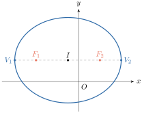
រកកូអរដោនេផ្ចិត កំពូល កំណុំ និងសង់ក្រាបតាងសមីការអេលីបនីមួយៗដូចខាងក្រោម៖
- ក. \(\displaystyle 4x^{2} + y^{2} - 8x + 4y + 4 = 0\)
- ខ. \(\displaystyle x^{2} + 9y^{2} - 8x + 36y + 4 = 0\) ។
មើលចម្លើយ
- ក. ផ្ចិត \(\displaystyle I(1, -2)\) កំពូល \(\displaystyle V_{1}(1, 0)\), \(\displaystyle V_{2}(1, -4)\) កំណុំ \(\displaystyle F(1, -2 \pm \sqrt{3})\)
- ខ. ផ្ចិត \(\displaystyle I(4, -2)\) កំពូល \(\displaystyle V(4 \pm 4\sqrt{3}, -2)\) កំណុំ \(\displaystyle F\left(4 \pm \frac{8\sqrt{6}}{3}, -2\right)\) (សៀវភៅពុម្ពទំព័រ 195 បោះពុម្ពខុសជា \(\displaystyle F(4 \pm 8\sqrt{8}, -2)\)) ។
4. អ៊ុចសង់ទ្រីស៊ីតេ
ហេតុផលមួយដែលពួកតារាវិទូមានការលំបាករកឱ្យឃើញគន្លងនៃភពមានរាងជាអេលីបនោះដោយសារតែកំណុំនៃគន្លងភពស្ថិតនៅជិតផ្ចិតនៃព្រះអាទិត្យ ហើយវាបង្កើតបានគន្លងស្ទើរតែជារង្វង់ ។ ដើម្បីវាស់រាងមូលទ្រវែងនៃអេលីប គេប្រើបញ្ញាត្តិនៃអ៊ុចសង់ទ្រីស៊ីតេ ។
និយមន័យ អ៊ុចសង់ទ្រីស៊ីតេ \(\displaystyle e\) នៃអេលីបគឺជាផលធៀបរវាង \(\displaystyle c\) ដែលជាចម្ងាយពីផ្ចិតទៅកំណុំ និង \(\displaystyle a\) ដែលជាកន្លះអ័ក្សធំនៃអេលីប \(\displaystyle e = \frac{c}{a}\) ។
សម្គាល់ : គ្រប់អេលីបទាំងអស់មានកំណុំនៅលើអ័ក្សធំ នៅចន្លោះកំពូល និងផ្ចិតនៃអេលីប នោះគេបាន \(\displaystyle 0 < c < a \iff 0 < \frac{c}{a} < 1 \iff 0 < e < 1\)
- បើកំណុំស្ថិតនៅកាន់តែជិតផ្ចិតនោះ \(\displaystyle \frac{c}{a}\) មានតម្លៃកាន់តែតូចទៅៗហើយអេលីបមានរាងស្ទើរតែជារង្វង់ ។
- បើកំណុំស្ថិតនៅកាន់តែជិតកំពូលនោះ \(\displaystyle \frac{c}{a}\) មានតម្លៃស្ទើរតែស្មើ \(\displaystyle 1\) ហើយអេលីបមានរាងកាន់តែទ្រវែង ។
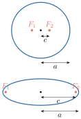
គន្លងនៃភពខាងក្រោមមានអ៊ុចសង់ទ្រីស៊ីតេដូចខាងក្រោម ៖
- ភពចន្ទ : \(\displaystyle e = 0.0549\)
- ភពពុធ : \(\displaystyle e = 0.2056\)
- ភពសុក្រ : \(\displaystyle e = 0.0068\)
- ភពអ៊ុយរ៉ានុស : \(\displaystyle e = 0.0460\)
- ភពអង្គារ : \(\displaystyle e = 0.0934\)
- ភពព្រហស្បតិ៍ : \(\displaystyle e = 0.0484\)
- ភពសៅរ៍ : \(\displaystyle e = 0.0543\)
- ភពផែនដី : \(\displaystyle e = 0.0167\)
- ភពណិបទូន : \(\displaystyle e = 0.0082\)
- ភពភ្លុយតុង : \(\displaystyle e = 0.2481\) ។
5. លក្ខណៈចំណាំងផ្លាតនៃអេលីប
អេលីបមានលក្ខណៈចំណាំងផ្លាតដូចគ្នានឹងប៉ារ៉ាបូលដែលបានសិក្សានៅក្នុងមេរៀនទី 1 ។ បន្ទាត់ \(\displaystyle l\) ប៉ះទៅនឹងអេលីបមួយត្រង់ចំណុច \(\displaystyle P\) ហើយអេលីបនោះមានកំណុំ \(\displaystyle F_{1}\) និង \(\displaystyle F_{2}\) (ដូចរូបដែលបានបង្ហាញ) ។
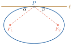
បើ \(\displaystyle \alpha\) ជាមុំបង្កើតឡើងដោយបន្ទាត់ \(\displaystyle F_{1}P\) និងបន្ទាត់ \(\displaystyle l\) ហើយ \(\displaystyle \beta\) ជាមុំបង្កើតឡើងដោយបន្ទាត់ \(\displaystyle F_{2}P\) និងបន្ទាត់ \(\displaystyle l\) នោះគេអាចបង្ហាញបានថា \(\displaystyle \alpha = \beta\) ។ ដូច្នេះ បើកាំពន្លឺ ឬរលកសំឡេងចេញពីកំណុំមួយ វាត្រូវចាំងផ្លាតទៅកាន់កំណុំមួយទៀត ។ លក្ខណៈនេះគេបានប្រើក្នុងការកំណត់ប្រភេទឧបករណ៍អុបទិក ។
លំហាត់
រកកូអរដោនេនៃផ្ចិត កំពូល កំណុំ និងអ៊ុចសង់ទ្រីស៊ីតេនៃអេលីប ហើយសង់អេលីបនីមួយៗ
- ក. \(\displaystyle x^{2} + 4y^{2} = 4\)
- ខ. \(\displaystyle 5x^{2} + 2y^{2} = 10\)
- គ. \(\displaystyle \frac{(x - 3)^{2}}{16} + \frac{(y + 4)^{2}}{9} = 1\)
- ឃ. \(\displaystyle (2 + x)^{2} + \frac{(y + 4)^{2}}{\frac{1}{4}} = 1\)
- ង. \(\displaystyle \frac{(x - 1)^{2}}{9} + \frac{(y - 5)^{2}}{25} = 1\)
- ច. \(\displaystyle \frac{(x + 2)^{2}}{4} + \frac{(y + 2)^{2}}{25} = 1\) ។
រកកូអរដោនេនៃផ្ចិត កំពូល កំណុំ និងអ៊ុចសង់ទ្រីស៊ីតេនៃអេលីប រួចសង់អេលីបនីមួយៗ
- ក. \(\displaystyle 9x^{2} + 4y^{2} + 36x - 24y + 36 = 0\)
- ខ. \(\displaystyle 100x^{2} + 16y^{2} - 100x - 64y - 311 = 0\)
- គ. \(\displaystyle 9x^{2} + 16y^{2} + 54x - 32y - 47 = 0\)
- ឃ. \(\displaystyle 25x^{2} + 4y^{2} - 25x - 16y + 541 = 0\)
- ង. \(\displaystyle 2x^{2} + 3y^{2} - 8x + 6y + 5 = 0\)
- ច. \(\displaystyle 4x^{2} + y^{2} + 4y = 0\) ។
- រកសមីការអេលីបដែលមានផ្ចិត \(\displaystyle (0, 0)\) កំណុំ \(\displaystyle (2, 0)\) និងកំពូល \(\displaystyle (3, 0)\) ។
- រកសមីការនៃអេលីបដែលមានផ្ចិត \(\displaystyle (0, 0)\) កំពូល \(\displaystyle (2, 0)\) និងអ័ក្សតូចមានប្រវែង \(\displaystyle 3\) ឯកតា ។
- រកសមីការនៃអេលីបដែលមានកំពូល \(\displaystyle (2, 0)\) និង \(\displaystyle (-2, 0)\) ហើយមានអ៊ុចសង់ទ្រីស៊ីតេស្មើនឹង \(\displaystyle \frac{3}{5}\) ។
- រកសមីការនៃអេលីបដែលមានកំណុំ \(\displaystyle (0, 0)\) និង \(\displaystyle (0, -5)\) ហើយអ័ក្សធំមានប្រវែង \(\displaystyle 6\) ឯកតា ។
- រកសមីការនៃអេលីបដែលមានផ្ចិត \(\displaystyle (0, 0)\) និងអ័ក្សធំជាអ័ក្សដេក ហើយចំណុច \(\displaystyle (3, 1)\) និង \(\displaystyle (4, 0)\) ស្ថិតនៅលើអេលីប ។
- រកសមីការនៃអេលីបដែលមានកំណុំ \(\displaystyle (0, 0)\) និង \(\displaystyle (4, 0)\) ។ ផលបូកចម្ងាយពីកំណុំទាំងពីរទៅចំណុចមួយនៅលើអេលីបស្មើនឹង \(\displaystyle 10\) ឯកតា ។
- រកសមីការនៃបន្ទាត់ប៉ះទៅនឹងអេលីប \(\displaystyle 4x^{2} + y^{2} = 4\) ដែលកាត់តាមចំណុច \(\displaystyle (3, 0)\) ។
- រកសមីការនៃអេលីបដែលមានផ្ចិត \(\displaystyle (0, 0)\) និងកំពូល \(\displaystyle (0, \pm 6)\) ហើយកាត់តាមចំណុច \(\displaystyle (3, 2)\) ។
- រកសមីការនៃអេលីបដែលមានផ្ចិត \(\displaystyle (0, 0)\) ហើយកាត់តាមចំណុច \(\displaystyle (2, 3)\) និង \(\displaystyle (6, 1)\) ។
- រកសមីការនៃអេលីបដែលមានផ្ចិត \(\displaystyle (0, 0)\) និងកាត់អ័ក្សអាប់ស៊ីសត្រង់ចំណុច \(\displaystyle (2, 0)\) និង \(\displaystyle (-2, 0)\) ហើយកាត់អ័ក្សអរដោនេត្រង់ចំណុច \(\displaystyle \left(0, \frac{1}{3}\right)\) និង \(\displaystyle \left(0, -\frac{1}{3}\right)\) ។
- រកសមីការនៃអេលីបដែលមានផ្ចិត \(\displaystyle (0, 0)\) ហើយអ័ក្សធំជាអ័ក្សដេកមានប្រវែង \(\displaystyle 8\) ឯកតានិងអ័ក្សតូចមានប្រវែង \(\displaystyle 5\) ឯកតា ។
ចម្លើយលំហាត់
- ក. \(\displaystyle \frac{x^{2}}{4} + y^{2} = 1\)៖ ផ្ចិត \(\displaystyle I(0, 0)\) កំពូល \(\displaystyle (\pm 2, 0)\) កំណុំ \(\displaystyle (\pm\sqrt{3}, 0)\) និងអ៊ុចសង់ទ្រីស៊ីតេ \(\displaystyle e = \frac{\sqrt{3}}{2}\) ។
- ខ. \(\displaystyle \frac{x^{2}}{2} + \frac{y^{2}}{5} = 1\)៖ ផ្ចិត \(\displaystyle I(0, 0)\) កំពូល \(\displaystyle (0, \pm\sqrt{5})\) កំណុំ \(\displaystyle (0, \pm\sqrt{3})\) និង \(\displaystyle e = \frac{\sqrt{15}}{5}\) ។
- គ. ផ្ចិត \(\displaystyle I(3, -4)\) កំពូល \(\displaystyle (-1, -4), (7, -4)\) កំណុំ \(\displaystyle (3 \pm \sqrt{7}, -4)\) និង \(\displaystyle e = \frac{\sqrt{7}}{4}\) ។
- ឃ. ផ្ចិត \(\displaystyle I(-2, -4)\) កំពូល \(\displaystyle (-3, -4), (-1, -4)\) កំណុំ \(\displaystyle \left(-2 \pm \frac{\sqrt{3}}{2}, -4\right)\) និង \(\displaystyle e = \frac{\sqrt{3}}{2}\) ។
- ង. ផ្ចិត \(\displaystyle I(1, 5)\) កំពូល \(\displaystyle (1, 0), (1, 10)\) កំណុំ \(\displaystyle (1, 1), (1, 9)\) និង \(\displaystyle e = \frac{4}{5}\) ។
- ច. ផ្ចិត \(\displaystyle I(-2, -2)\) កំពូល \(\displaystyle (-2, -7), (-2, 3)\) កំណុំ \(\displaystyle (-2, -2 \pm \sqrt{21})\) និង \(\displaystyle e = \frac{\sqrt{21}}{5}\) ។
- ក. \(\displaystyle \frac{(x + 2)^{2}}{4} + \frac{(y - 3)^{2}}{9} = 1\)៖ ផ្ចិត \(\displaystyle I(-2, 3)\) កំពូល \(\displaystyle (-2, 0), (-2, 6)\) កំណុំ \(\displaystyle (-2, 3 \pm \sqrt{5})\) និង \(\displaystyle e = \frac{\sqrt{5}}{3}\) ។
- ខ. \(\displaystyle \frac{\left(x - \frac{1}{2}\right)^{2}}{4} + \frac{(y - 2)^{2}}{25} = 1\)៖ ផ្ចិត \(\displaystyle I\left(\frac{1}{2}, 2\right)\) កំពូល \(\displaystyle \left(\frac{1}{2}, -3\right), \left(\frac{1}{2}, 7\right)\) កំណុំ \(\displaystyle \left(\frac{1}{2}, 2 \pm \sqrt{21}\right)\) និង \(\displaystyle e = \frac{\sqrt{21}}{5}\) ។
- គ. \(\displaystyle \frac{(x + 3)^{2}}{16} + \frac{(y - 1)^{2}}{9} = 1\)៖ ផ្ចិត \(\displaystyle I(-3, 1)\) កំពូល \(\displaystyle (-7, 1), (1, 1)\) កំណុំ \(\displaystyle (-3 \pm \sqrt{7}, 1)\) និង \(\displaystyle e = \frac{\sqrt{7}}{4}\) ។
- ឃ. គ្មានចំណុចពិត (អង្គខាងស្ដាំអវិជ្ជមាន \(\displaystyle -\frac{2075}{4} < 0\)) ។ (ប្រសិនបើតួ \(\displaystyle -25x\) ជា \(\displaystyle -250x\) នោះបាន \(\displaystyle \frac{(x - 5)^{2}}{4} + \frac{(y - 2)^{2}}{25} = 1\) ដែលមានផ្ចិត \(\displaystyle I(5, 2)\) កំពូល \(\displaystyle (5, -3), (5, 7)\) កំណុំ \(\displaystyle (5, 2 \pm \sqrt{21})\) និង \(\displaystyle e = \frac{\sqrt{21}}{5}\)) ។
- ង. \(\displaystyle \frac{(x - 2)^{2}}{3} + \frac{(y + 1)^{2}}{2} = 1\)៖ ផ្ចិត \(\displaystyle I(2, -1)\) កំពូល \(\displaystyle (2 \pm \sqrt{3}, -1)\) កំណុំ \(\displaystyle (1, -1), (3, -1)\) និង \(\displaystyle e = \frac{\sqrt{3}}{3}\) ។
- ច. \(\displaystyle x^{2} + \frac{(y + 2)^{2}}{4} = 1\)៖ ផ្ចិត \(\displaystyle I(0, -2)\) កំពូល \(\displaystyle (0, -4), (0, 0)\) កំណុំ \(\displaystyle (0, -2 \pm \sqrt{3})\) និង \(\displaystyle e = \frac{\sqrt{3}}{2}\) ។
- \(\displaystyle \frac{x^{2}}{9} + \frac{y^{2}}{5} = 1\)
- \(\displaystyle \frac{x^{2}}{4} + \frac{4y^{2}}{9} = 1\)
- \(\displaystyle \frac{x^{2}}{4} + \frac{25y^{2}}{64} = 1\)
- \(\displaystyle \frac{4x^{2}}{11} + \frac{\left(y + \frac{5}{2}\right)^{2}}{9} = 1\)
- \(\displaystyle \frac{x^{2}}{16} + \frac{7y^{2}}{16} = 1\)
- \(\displaystyle \frac{(x - 2)^{2}}{25} + \frac{y^{2}}{21} = 1\)
- \(\displaystyle y = \frac{\sqrt{2}}{2}(x - 3)\) និង \(\displaystyle y = -\frac{\sqrt{2}}{2}(x - 3)\)
- \(\displaystyle \frac{8x^{2}}{81} + \frac{y^{2}}{36} = 1\)
- \(\displaystyle \frac{x^{2}}{40} + \frac{y^{2}}{10} = 1\)
- \(\displaystyle \frac{x^{2}}{4} + 9y^{2} = 1\)
- \(\displaystyle \frac{x^{2}}{16} + \frac{4y^{2}}{25} = 1\)
ខ្លឹមសារ៖ សៀវភៅពុម្ពគណិតវិទ្យាថ្នាក់ទី១២ របស់ក្រសួងអប់រំ យុវជន និងកីឡា · វាយអត្ថបទ គូររូបភាពឡើងវិញ និងរៀបចំលើអនឡាញដោយលោកគ្រូ សាន សុខលី សម្រាប់ការសិក្សាដោយឥតគិតថ្លៃ និងមិនរកប្រាក់ចំណេញ។ មិនមែនជាការបោះពុម្ពផ្លូវការរបស់ក្រសួងទេ។